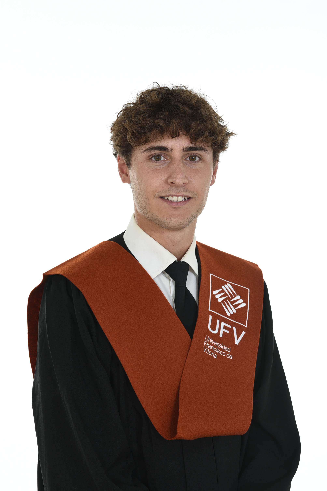

"Orientar mi carrera profesional en el campo de las ciencias experimentales, cursando el grado de ingeniería biomédica, me llevará a desarrollar y crear productos que mejorarán la calidad de vida de las personas. Con ello podré alcanzar mi verdadera vocación que es la de ayudar a los demás. ¡Estoy donde quería estar, más cerca que nunca de lograrlo!"
Prácticas Clínicas (Julio - Agosto 2026) | Inmersión técnica en el entorno hospitalario.
Sistema Da Vinci
Asistencia en quirófano observando cirugías robóticas operadas con el avanzado sistema Da Vinci, así como asistencia en intervenciones de cirugía general y procedimientos de implantación protésica. Análisis de telemanipulación de precisión, cinemática de los brazos robóticos, e integración de la interfaz máquina-cirujano en entornos críticos.
Rotación intensiva en la operativa de equipos de alta complejidad: Tomografía Axial Computarizada (TAC), Resonancia Magnética (RM) y Rayos X. Familiarización con protocolos de adquisición e imagenología médica.
Desarrollo de un tocodinamómetro inalámbrico de bajo consumo. Utiliza células de carga para la medición precisa de contracciones uterinas y transmite datos en tiempo real mediante conexión Wi-Fi y protocolo MQTT.
Creación de un entorno virtual de medicina regenerativa. Integración del manejo simulado de un brazo robótico mediante XR Interaction Toolkit, mejorando el entrenamiento médico a través de la simulación espacial.
Modelado avanzado orientado a soluciones ortopédicas. Incluye el diseño y optimización de un clavo intramedular de titanio para fracturas, y el desarrollo de una mascarilla nasal deportiva protectora en PETG.
+ Diploma en Emprendimiento, Innovación y Transferencia Tecnológica
Universidad Francisco de Vitoria (2023 - 2027)